Lydkortet tar imot signalet fra mikrofon eller instrument, forsterker det og gjør det digitalt. På vei ut gjøres det analogt igjen og sendes til høyttalere eller hodetelefoner.
Plassering: Lydkortet – forbindelsen mellom studioet og datamaskinen · Fil: mp-lydkort.svg
2
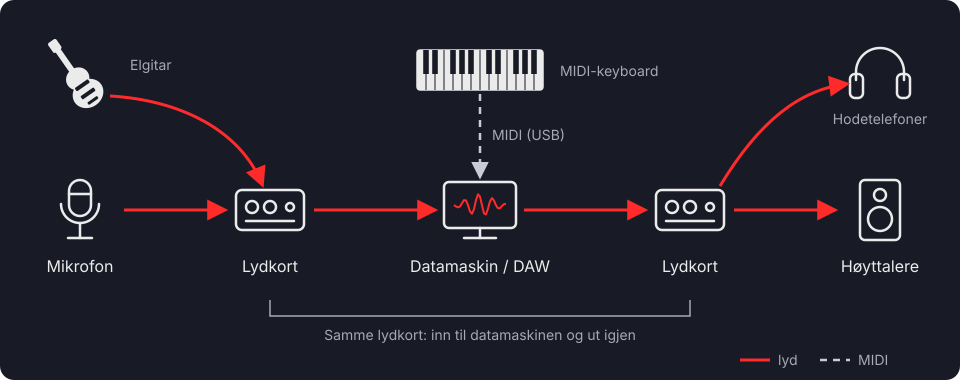
Et enkelt opptak: lyden går inn gjennom lydkortet, behandles i DAW-en og går ut gjennom det samme lydkortet. Et MIDI-keyboard kobles gjerne rett til datamaskinen.
Plassering: Signalveien – nøkkelen til å forstå studioet · Fil: mp-studio.svg
Fra lydkilde til høyttaler node/295
3
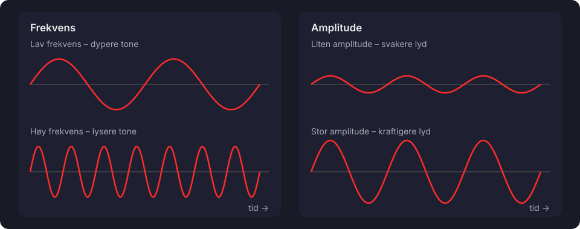
Frekvensen er antall svingninger per sekund og henger sammen med tonehøyden. Amplituden er størrelsen på svingningene og henger sammen med hvor kraftig lyden er.
Plassering: Hva er egentlig lyd? · Fil: mp-lyd.svg
4
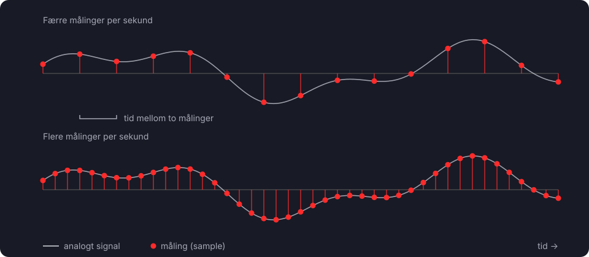
Omformeren måler signalet med jevne mellomrom. Samplingsfrekvensen er antall målinger per sekund: ved 44,1 kHz måles signalet 44 100 ganger i sekundet.
Plassering: Samplingsfrekvens – hvor ofte måler vi? · Fil: mp-sampling.svg
5
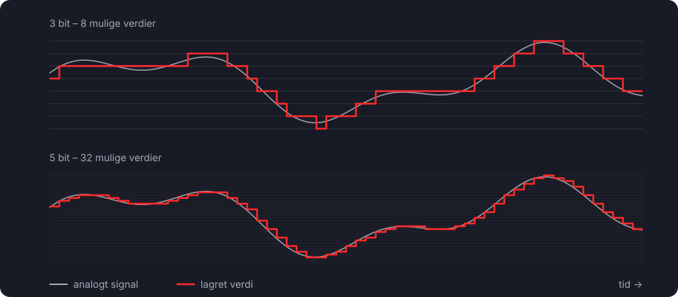
Bitdybden avgjør hvor mange verdier hver måling kan få. Figuren bruker 3 og 5 bit for å gjøre trinnene synlige. 16 bit gir 65 536 verdier, 24 bit over 16 millioner.
Plassering: Bitdybde – hvor nøyaktig måler vi? · Fil: mp-bitdybde.svg
6
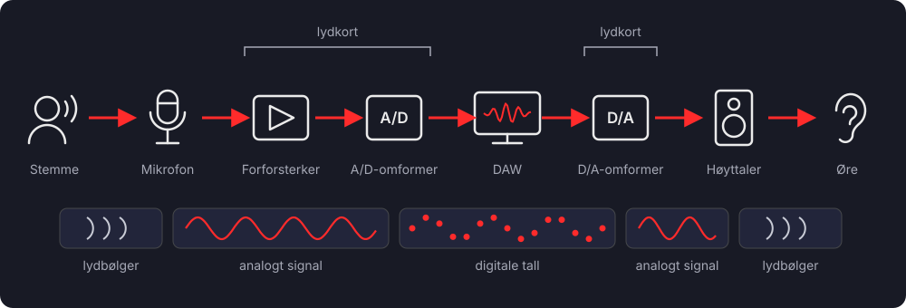
Hele reisen fra stemme til øre. Underveis skifter signalet form: lydbølger i luften, analogt elektrisk signal, digitale tall – og tilbake igjen.
Plassering: Fra digitale data tilbake til lyd (ved «Hele reisen kan dermed beskrives slik») · Fil: mp-reisen.svg
7
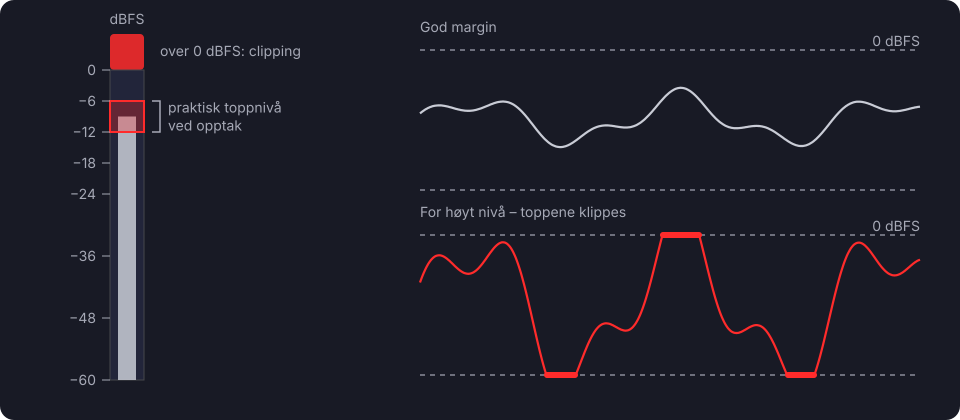
0 dBFS er det høyeste nivået en vanlig digital lydfil kan lagre. Går signalet over, klippes toppene og lyden kan forvrenges. Ved opptak er det lurt å ha god margin.
Plassering: Signalnivå – når blir lyden for kraftig? · Fil: mp-niva.svg
Audio og MIDI – to forskjellige verdener node/296
8
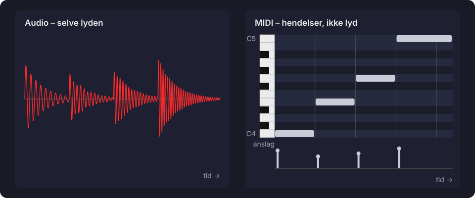
Den samme frasen (C4 – E4 – G4 – C5) som lydopptak og som MIDI. Bølgeformen inneholder selve lyden. Pianorullen viser bare hvilke toner som spilles, når, hvor lenge og med hvilket anslag.
Plassering: To måter å arbeide med musikk på · Fil: mp-audio-midi.svg
9
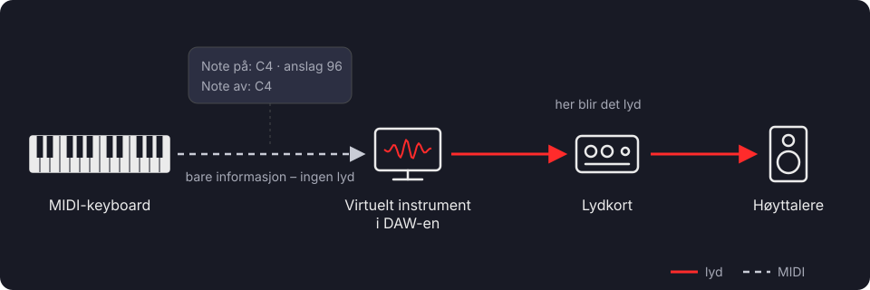
MIDI-keyboardet sender bare meldinger om hvilke toner som spilles. Det blir lyd først når meldingene når det virtuelle instrumentet.
Plassering: Hva skjer når vi spiller på et MIDI-keyboard? · Fil: mp-midi-vei.svg
10
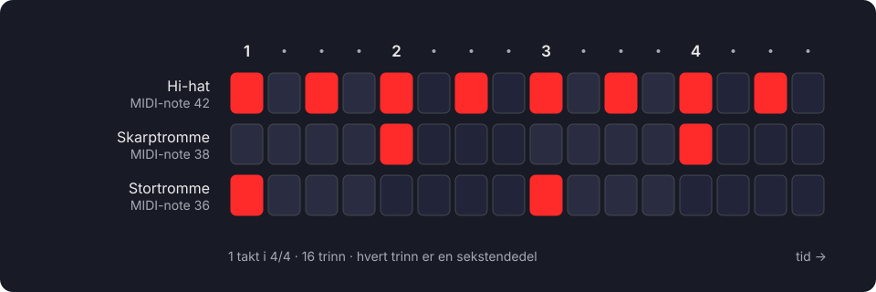
En step sequencer viser én takt som 16 trinn. Hver rad er en MIDI-note som utløser én trommelyd. Her: stortromme på 1 og 3, skarptromme på 2 og 4 og hi-hat på åttendedeler.
Plassering: MIDI og trommeprogrammering · Fil: mp-step.svg
Spor, looper og redigering node/297
11
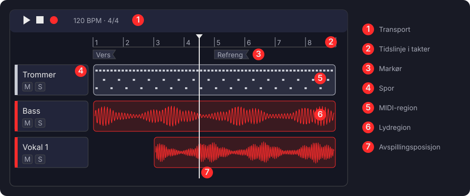
Programmene ser forskjellige ut, men de fleste DAW-er har de samme delene: transport, tidslinje, markører, spor og regioner med lyd eller MIDI.
Plassering: Det digitale arbeidsbordet · Fil: mp-daw.svg
12
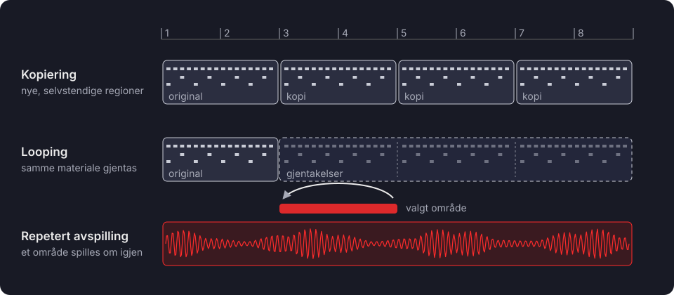
Tre arbeidsmåter som ligner på hverandre: kopiering lager nye regioner, looping gjentar det samme materialet, og repetert avspilling spiller et valgt område om og om igjen uten å endre prosjektet.
Plassering: Hva er en loop? · Fil: mp-looper.svg
13
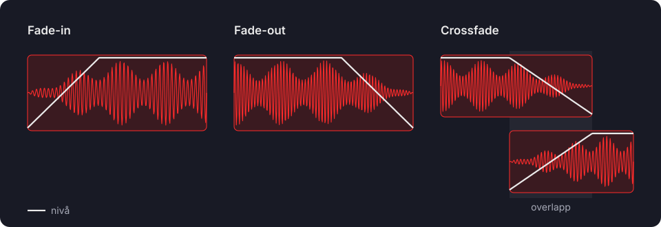
Den hvite linjen viser nivået. En fade-in øker nivået gradvis, en fade-out senker det. I en crossfade dempes den første regionen mens den andre kommer inn.
Plassering: Overganger og crossfades · Fil: mp-fades.svg
Introduksjon til miksing node/298
14
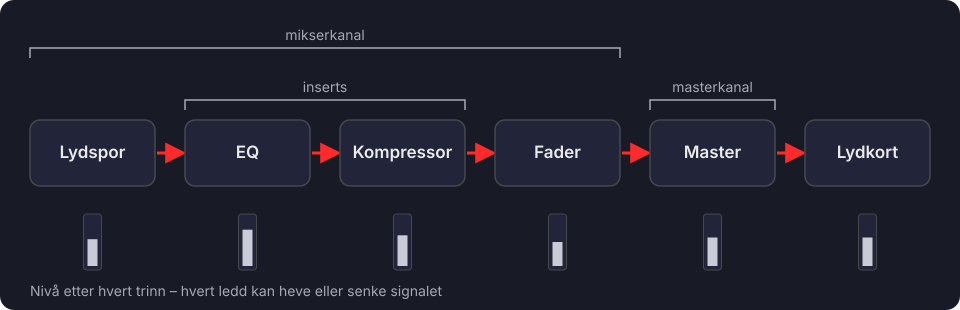
En forenklet signalvei. Hvert trinn kan endre nivået, så vi følger med på det hele veien – ikke bare på masteren.
Plassering: Gain staging – kontroll på signalnivåene (ved eksempelet med pilrekken) · Fil: mp-kjede.svg
15
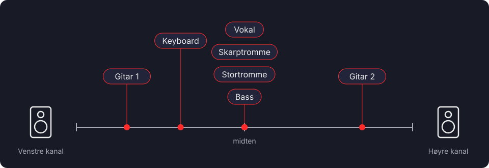
Et eksempel på plassering i stereobildet: bass, stortromme, skarptromme og vokal i midten, gitarene på hver sin side. Dette er vanlige arbeidsmåter, ikke faste regler.
Plassering: Panorering – plassering i stereobildet · Fil: mp-stereo.svg
16
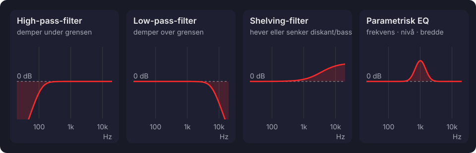
Fire vanlige EQ-filtre. Den vannrette linjen er 0 dB, altså ingen endring. Over linjen heves frekvensene, under linjen dempes de.
Plassering: Equalizer – kontroll over frekvensene · Fil: mp-eq.svg
17
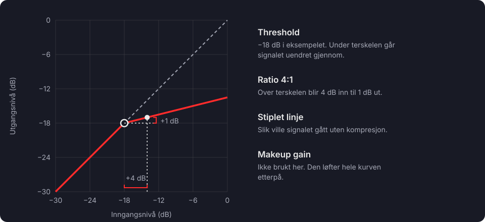
Under terskelen går signalet uendret gjennom. Over terskelen gir ratio 4:1 omtrent 1 dB økning ut for hver 4 dB inn. Kurven viser full virkning, uten attack og release.
Plassering: Kompresjon – kontroll over dynamikken (ved eksempelet med ratio 4:1) · Fil: mp-kompressor.svg
18
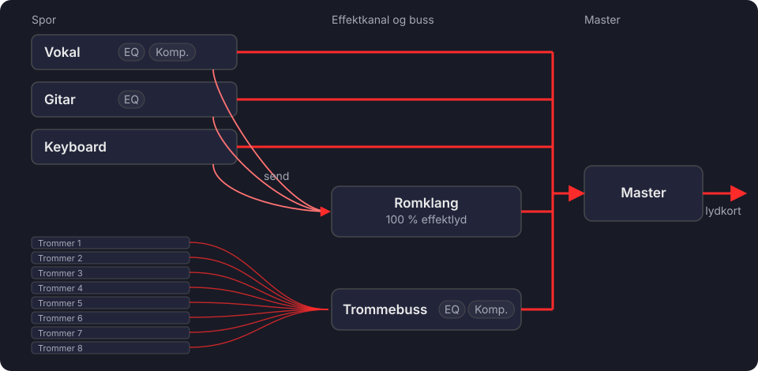
Inserts ligger direkte i sporets signalvei. En send fører en andel av signalet til en felles effektkanal, her romklang. Åtte trommespor samles i én buss med felles EQ og kompresjon.
Plassering: Insert og send / Grupper og busser · Fil: mp-ruting.svg